Cuando el espacio ya es un argumento
Brumma no empieza cuando se pone el primer plato. Empieza cuando se abre la puerta y aparece aquella sala acristalada, con el Mediterráneo al fondo como si alguien hubiera olvidado cerrar el horizonte. Las mesas, redondas, estaban montadas con una atención al detalle que ya anticipaba el tono de la noche: la minuta cuidadosamente impresa, las copas en posición, y en el centro de cada mesa —no como adorno, sino como declaración de intenciones— las botellas de vino que iban a protagonizar el recorrido de la velada.
Infinitum Resort acumula títulos que no son fáciles de ignorar: Mejor Beach Club de Europa tres años consecutivos según los World Travel Awards. Dos campos y medio de golf, seis piscinas, seis puntos de restauración. Brumma —sala interior del Flamma Beach Foodhouse— es la pieza más cuidada de ese conjunto: un espacio con vistas que cualquier restaurante del Camp de Tarragona envidiaría, reformado para funcionar como restaurante de autor y como espacio de eventos de altura.
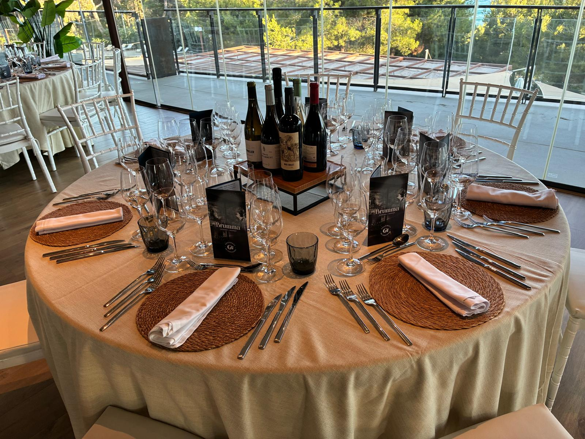
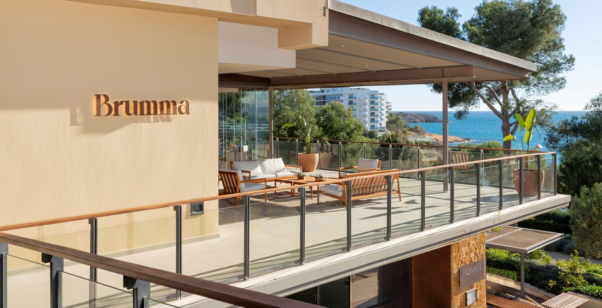
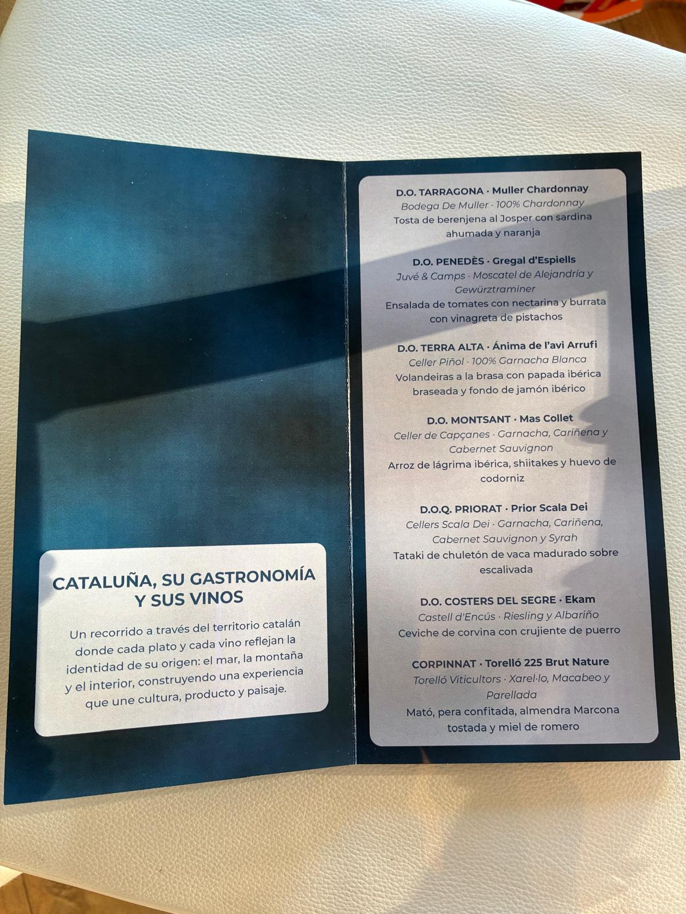
Más invitados que socios, y el sitio lo merecía
Fue, en el sentido más literal de la palabra, una cena excepcional. No solo por la calidad de lo que se sirvió, sino porque se salió de lo ordinario en todo: el aforo, los asistentes y el tono de la noche. Los Gourmets de Tarragona abrieron las puertas a invitados, y por primera vez en la temporada el número de comensales superó al de socios. Más de sesenta personas ocuparon la sala de Brumma aquella noche del 2 de julio. El sitio lo merecía, y quienes se quedaron fuera ya lo sabrán cuando se repita.
Entre los asistentes, caras conocidas y nuevas que enriquecieron la conversación de mesa. El Sr. Diego García González, Head of Sales Smart Infrastructures en Siemens España, fue el ponente invitado de la noche: compartió sus recuerdos de los inicios en la compañía con una sala que lo escuchaba con atención genuina. Josep Vilaseca Rius, «Suqui», vicepresidente y cofundador de la asociación gastronómica Casacas Rojas, regresaba después de acompañarnos en La Goleta, y su don para calentar cualquier sala sin que nadie se lo pida es ya parte del guión. Completaban la mesa el subdelegado de defensa D. José Manuel LaTorre Morales, Xavier Coll, Managing Director de Westinghouse Spain, y directivos de Siemens. La presencia del Sr. Emili Mateu, socio de los Gourmets de Tarragona, fue recibida, como siempre, con el honor que merece.
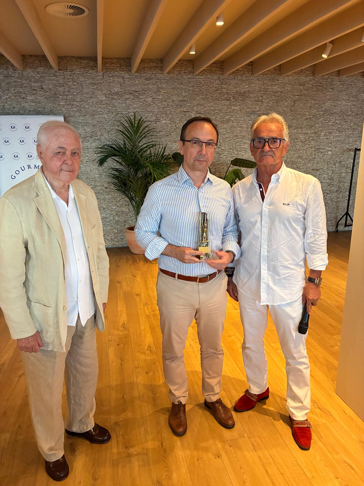
Diego García González (Siemens España) durante su intervención como ponente invitado de la velada · Brumma · Julio 2026
El equipoGuillem, Esteban y Aroa: tres maneras de entender la hospitalidad
Detrás de la cocina, Guillem Martínez Batiste. Nueve años en Infinitum —llegó como estudiante en prácticas, formado en Dirección de Cocina en los Jesuitas de Sarrià— y hace seis meses asumió la dirección culinaria de todo el proyecto gastronómico del resort. Es la trayectoria de alguien que ha crecido en la casa, que conoce cada rincón porque en algún momento ha trabajado en todos. Durante la cena salió a sala a explicar cada elaboración con la precisión y la cercanía de quien habla de algo que conoce de verdad.
Esteban Puga Claver, director de Food & Beverage y Beach Club de Infinitum, presentó cada vino antes de cada pase con el rigor de un sumiller y la cercanía de alguien que quiere que entiendas lo que estás bebiendo, no solo que lo apruebes. Proviene de una familia de hosteleros de Tarragona y ha vivido el sector desde la infancia: se notó. Aroa Ruiz Ait, restaurant manager de Brumma, completaba el equipo de sala: discreta, eficaz, atenta a cada detalle de una sala con más de sesenta personas sin que se notara el esfuerzo. De esas personas que hacen que todo funcione sin que nadie tenga que pedirlo.
El concepto de la nocheSiete DOs. Un recorrido por Cataluña desde la copa
El título del menú lo decía sin rodeos: Cataluña, su gastronomía y sus vinos. Y la organización se lo tomó en serio. Siete denominaciones de origen catalanas —Tarragona, Penedès, Terra Alta, Montsant, Priorat, Costers del Segre y Corpinnat— servidas en un recorrido que iba de norte a sur, de blanco a espumoso, con la intención de que cada vino tuviera algo que decir junto al plato con el que se presentaba.
Las botellas no esperaban en ninguna bodega: estaban en el centro de las mesas redondas, visibles y accesibles desde el principio, como si la organización quisiera recordar desde el primer momento que aquí los vinos no eran un acompañamiento. Eran el hilo conductor. Esteban Puga se encargó de presentar cada referencia antes de cada pase: procedencia, variedad, por qué ese vino con ese plato. No era una clase magistral, era una conversación. Y la sala la agradeció.
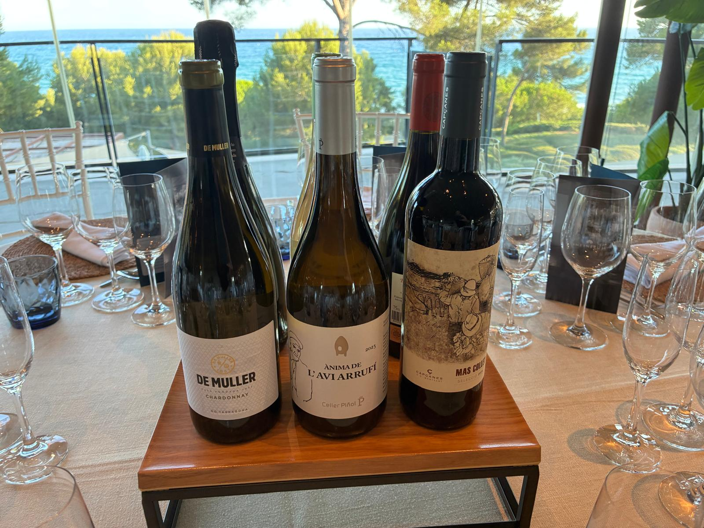
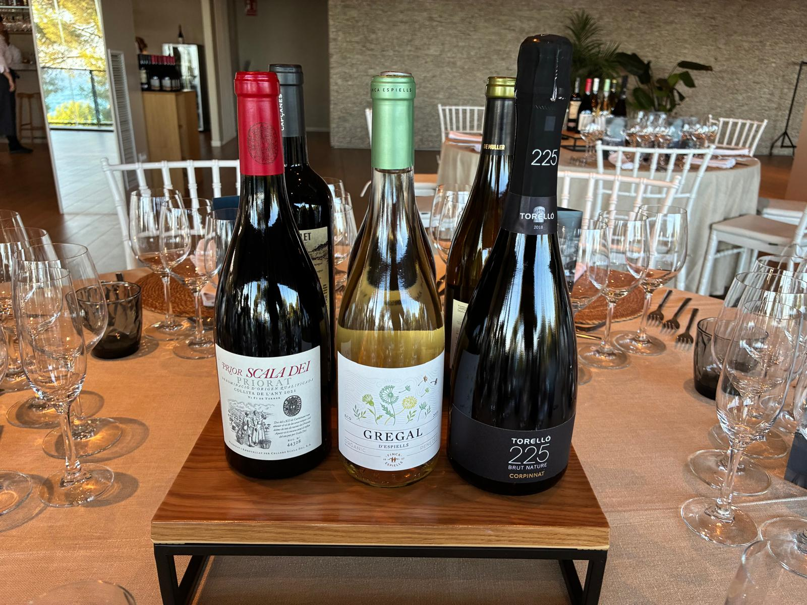
La tosta que puso el listón desde el principio
La tosta de berenjena al Josper con sardina ahumada y naranja marcó el tono desde el primer bocado: una cocina sin miedo a los sabores pronunciados, que usa la brasa —el Josper, el horno que Guillem maneja como un instrumento— como herramienta de precisión, no de potencia. La berenjena cocinada al Josper adquiere una suavidad ahumada que pocas técnicas logran, y la sardina ahumada y el toque de naranja añadían complejidad sin robar protagonismo al conjunto. El Muller Chardonnay de la D.O. Tarragona, fresco y mineral, fue un arranque limpio y pertinente.
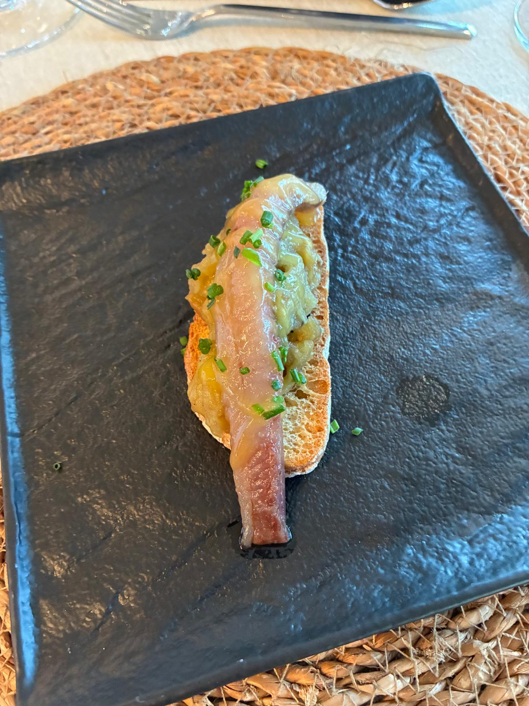
Tosta de berenjena al Josper con sardina ahumada y naranja — el primer pase marcó el tono de una cocina de brasas con oficio
Segundo paseLa ensalada que reconcilia con el verano
La ensalada de tomates con nectarina y burrata con vinagreta de pistachos fue la pausa refrescante que la noche necesitaba entre los sabores más contundentes de la brasa. No es el plato que te obliga a inclinarte sobre la mesa, sino el que te reconcilia con el verano: la acidez madura del tomate, la dulzura de la nectarina en su punto, la cremosidad de la burrata y esa vinagreta de pistachos que lo elevaba por encima de cualquier ensalada de temporada convencional. El Gregal d'Espiells de Juvé & Camps —Moscatel de Alejandría y Gewürztraminer— era exactamente lo que hacía falta: aromático, ligero, cómplice.
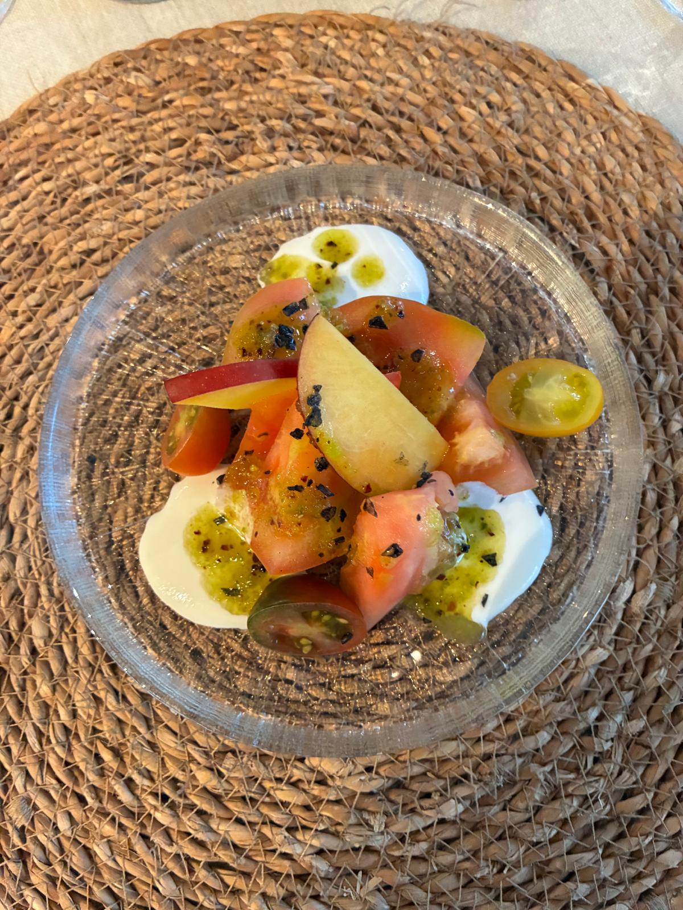
Ensalada de tomates con nectarina y burrata — una pausa refrescante y bien construida, con el Penedès como maridaje
Tercer paseLas volandeiras: mar y montaña en un plato de aplausos silenciosos
Las volandeiras a la brasa con papada ibérica braseada y fondo de jamón ibérico fueron el primer momento de aplauso silencioso de la noche. Mar y montaña en un solo plato, sin que ninguno de los dos mundos aplastara al otro. Las volandeiras, de una frescura que se notaba en la textura, se servían sobre aquel fondo de jamón ibérico que actuaba como una salsa de intensidad calculada —presente, pero sin imponerse—, y la papada ibérica braseada añadía esa nota grasa que redondea. El Ànima de l'avi Arrufi de Celler Piñol —100% Garnacha Blanca de Terra Alta— era el maridaje menos obvio de la noche y el que mejor funcionó.
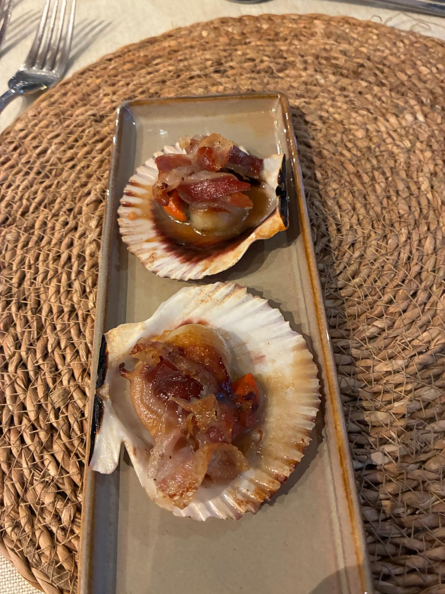
Volandeiras a la brasa con papada ibérica y fondo de jamón — el maridaje con el Terra Alta fue el más sorprendente de la noche
El plato de la nocheEl arroz de lágrima ibérica que todos recordarán
El arroz de lágrima ibérica, shitakes y huevo de codorniz fue el momento de máxima intensidad de la noche, sin discusión. No todos los arroces merecen silencio. Este lo mereció. Meloso —en ese punto difícil de conseguir que no es ni caldoso ni seco— con aquella lágrima ibérica que lo impregna todo de una profundidad que ninguna técnica puede simular, los shitakes aportando textura y un umami que dialogaba con el ibérico, y el huevo de codorniz como remate: esa yema que se rompe y convierte el arroz en algo todavía más complejo, más redondo. Guillem lo explicó en sala con la autoridad tranquila de quien sabe lo que ha cocinado. El Mas Collet de Celler de Capçanes —Garnacha, Cariñena y Cabernet del Montsant— aguantaba el peso del plato sin pestañear.
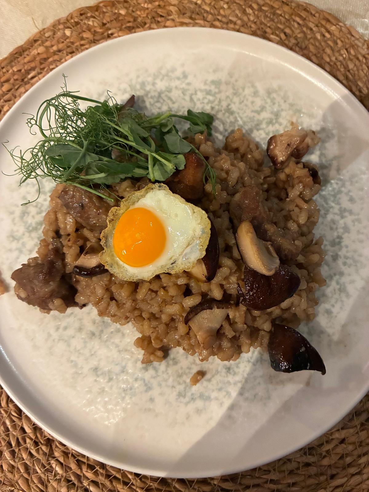
Arroz de lágrima ibérica, shitakes y huevo de codorniz — el plato de la noche, con el Montsant a la altura
Quinto y sexto paseEl tataki que llega en el momento justo, y el ceviche que no busca consenso
El tataki de chuletón de vaca madurado sobre escalivada llegó en el momento exacto en que la cena necesitaba peso. La maduración del chuletón se notaba en cada bocado: una carne que había tenido tiempo de desarrollarse, servida con el punto de cocción que la técnica del tataki impone —vuelta y vuelta, con el interior en su punto— y con la escalivada como fondo de paisaje quemado y dulce. El Prior Scala Dei de Cellers Scala Dei —Garnacha, Cariñena, Cabernet Sauvignon y Syrah del Priorat— no necesitaba presentación, pero Esteban la hizo de todas formas, y fue la correcta.
El ceviche de corvina con crujiente de puerro fue, como siempre que aparece un ceviche en una cena de estas características, el plato más personal de la velada. A los amantes de la cocina ácida —que los había, y con criterio— les pareció sobresaliente: la corvina en su punto de curación, el crujiente de puerro como contrapunto de textura, el punto de leche de tigre medido y sin excesos. A los que no terminan de hacer las paces con el ácido, el plato les resultó más desafiante. Pero incluso entre estos últimos, nadie puso en cuestión la ejecución. El Ekam de Castell d'Encús —Riesling y Albariño de Costers del Segre— fue la elección más atrevida del menú y la que mejor encajó en su contexto.
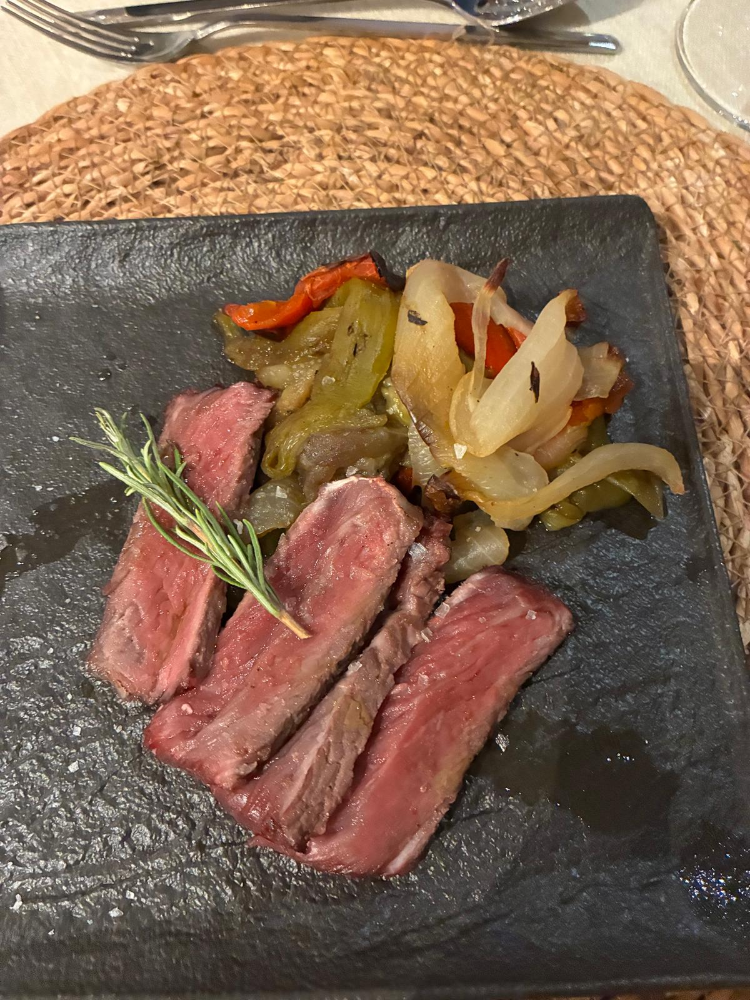
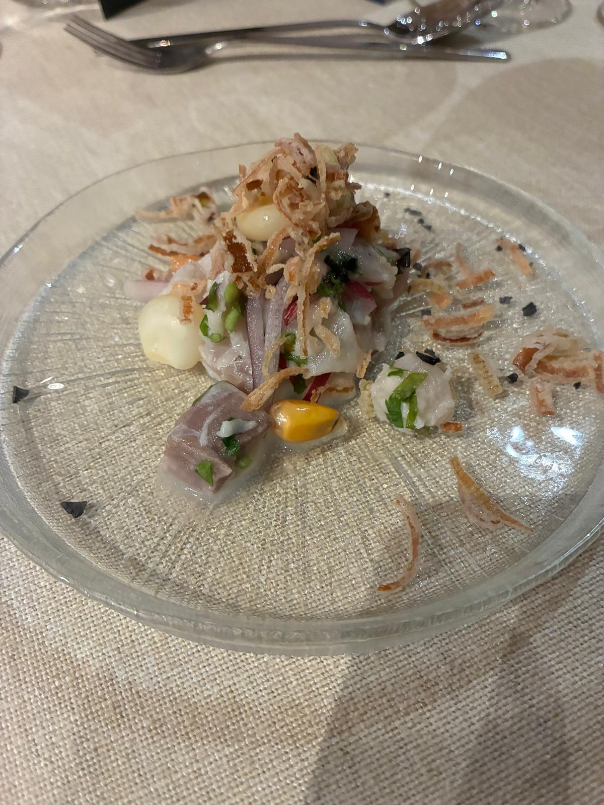
Mató, pera y miel: cuando el postre acierta con no pedir más
El mató con pera confitada, almendra Marcona tostada y miel de romero cerró el recorrido con una elegancia mediterránea de las que no saturan. Dulce sin ser empalagoso, con la acidez suave de la pera confitada, el toque tostado y levemente amargo de la almendra Marcona y esa miel de romero que perfumaba el conjunto sin imponerse. Un postre que no pide que te rindas ante él, sino que te invita a terminarlo tranquilamente. El Torelló 225 Brut Nature —Xarel·lo, Macabeo y Parellada de Corpinnat— cerró el ciclo vinícola con sus burbujas finas y su frescura estructurada: el compañero perfecto para un final que no quiso excederse.
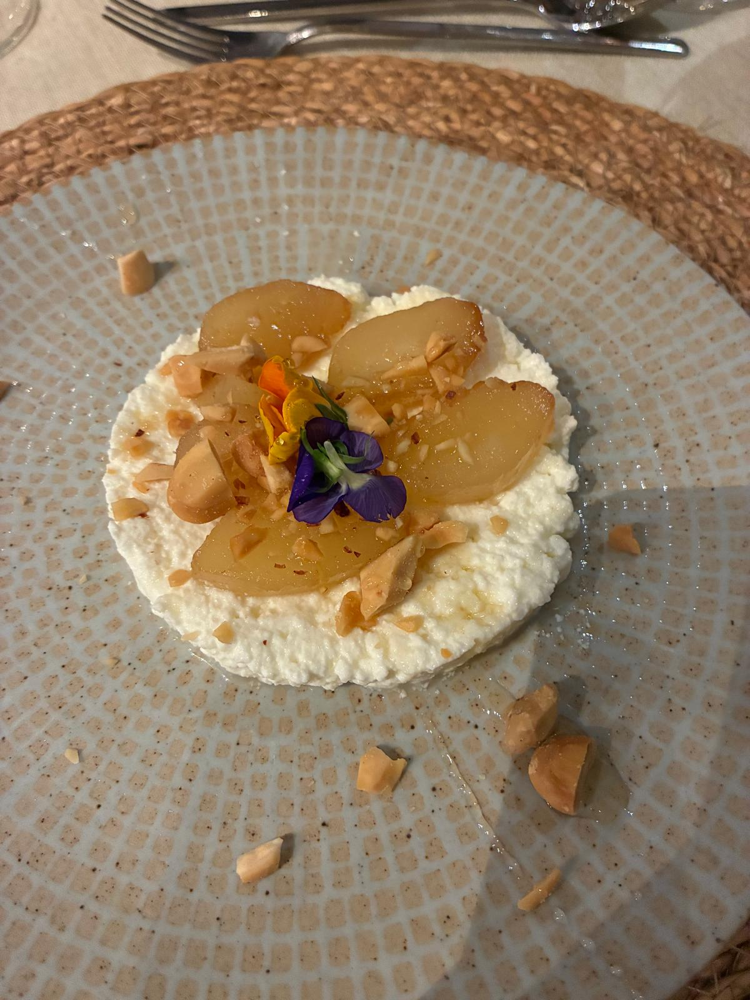
Mató, pera confitada, almendra Marcona y miel de romero — un cierre mediterráneo y sin excesos, con el Torelló 225 Brut Nature
Cataluña, su gastronomía y sus vinos
Un recorrido por el mapa vinícola catalán, de norte a sur, de blanco a espumoso, construido plato a plato. Siete DOs, siete argumentos.
Tosta · D.O. Tarragona
Muller Chardonnay
100% Chardonnay · De Muller
Ensalada · D.O. Penedès
Gregal d'Espiells
Moscatel de Alejandría y Gewürztraminer · Juvé & Camps
Volandeiras · D.O. Terra Alta
Ànima de l'avi Arrufi
100% Garnacha Blanca · Celler Piñol
Arroz ★ · D.O. Montsant
Mas Collet
Garnacha, Cariñena y Cabernet · Celler de Capçanes
Tataki · D.O.Q. Priorat
Prior Scala Dei
Garnacha, Cariñena, Cab. Sauvignon y Syrah · Cellers Scala Dei
Ceviche · D.O. Costers del Segre
Ekam
Riesling y Albariño · Castell d'Encús
Postre · Corpinnat
Torelló 225 Brut Nature
Xarel·lo, Macabeo y Parellada · Torelló Viticultors
«¡Festival!» El grito que convierte una cena en una celebración
Suqui no dejó pasar la noche sin dar vida a la sala de la manera que solo los Casacas Rojas saben hacerlo. El grito de guerra —«¡Festival!»— resonó en más de una ocasión durante la velada, ese agradecimiento coral que la asociación gastronómica barcelonesa ha convertido en ritual desde 2003, y que en Brumma encontró una sala receptiva y con ganas. Sesenta personas que no se conocían todas entre sí y que, al final de la noche, compartían algo: el recuerdo de una cena que estuvo a la altura del escenario.
El ritmo de la cena fue, como debe ser, adecuado: los platos llegaron con la cadencia justa, el servicio no se precipitó ni se detuvo, y la temperatura de la sala —acondicionada para recibir a más de sesenta personas sin que nadie lo notara— fue perfecta durante toda la velada. Cuando todo funciona así de bien, es porque alguien lo ha pensado antes.
El reconocimientoEl diploma de los Gourmets, la firma de una noche
Al cierre de la velada, el presidente Juan Manuel Rodríguez Yarritu y el ponente invitado Diego García González hicieron entrega del diploma recordatorio de los Gourmets de Tarragona al restaurante. Un gesto que la casa recibió con la misma hospitalidad con la que había acogido a los socios y sus invitados: con sencillez y agradecimiento genuino. El diploma certifica el paso de los Gourmets de Tarragona por Brumma, pero también es el reconocimiento a una noche que estuvo a la altura de todo lo que prometía.
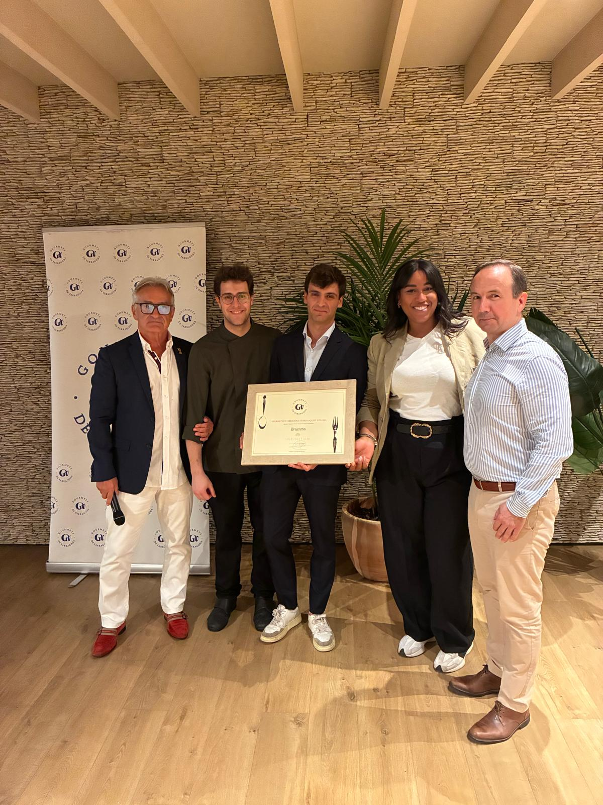
Juan Manuel Rodríguez Yarritu (presidente) y Diego García González entregan el diploma de los Gourmets de Tarragona a Brumma · Julio 2026
Nuestra miradaBrumma tiene ganas de que vuelvas. Y tú también
Brumma tiene algo que no se puede comprar ni decorar: aquella sala acristalada con el Mediterráneo al fondo que transforma cualquier cena en algo más grande que la suma de sus platos. Pero a diferencia de otros espacios que descansan demasiado en el escenario, aquí la cocina y el servicio sostienen el peso por sus propios méritos. El concepto de los vinos como hilo conductor del menú fue una elección inteligente que dio coherencia y un argumento propio a una noche larga y muy concurrida. No fue solo un maridaje: fue una propuesta.
Los platos respondieron en su conjunto. El arroz de lágrima ibérica fue la cima indiscutible, y las volandeiras la segunda mención que nadie discute. El ceviche dividió —como siempre lo hace cuando aparece en estas circunstancias—, pero lo hizo con nivel. La sala estuvo atenta de principio a fin, Guillem explicó sus elaboraciones con la confianza de quien no tiene nada que ocultar, y Esteban Puga demostró que un buen director de F&B puede elevar la percepción de una cena sin añadir ni un solo ingrediente a los platos. Aroa Ruiz coordinó sesenta comensales sin que ninguno lo notara.
La valoración definitiva llegará en la Gala de finales de año. Pero el veredicto de la noche fue claro cuando llegó la medianoche y nadie tenía prisa por marcharse. Hay rumores fundados de que la próxima cena de verano podría repetirse en esta misma sala. Si es así, ya saben dónde estaremos.
Más crónicas de restaurante
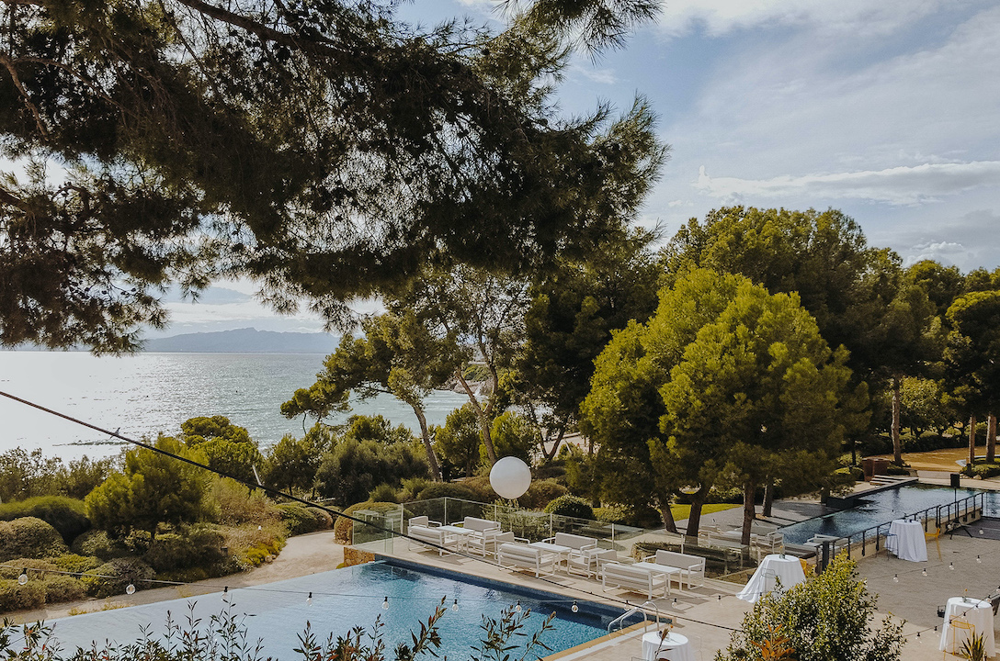
PreviaBrumma · Previa
El mejor beach club de Europa, seis puntos de restauración y un chef que lleva nueve años creciendo en la casa.
Leer →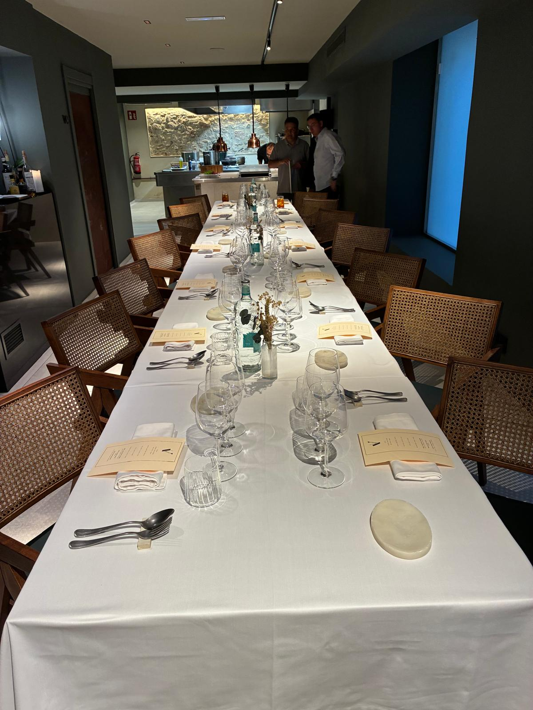
CrónicaCervus · Crónica
Nil Bono y Lucía Fernández en Reus. Una cocina sin imposturas que sitúa el territorio en el centro.
Leer →